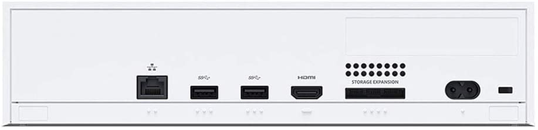
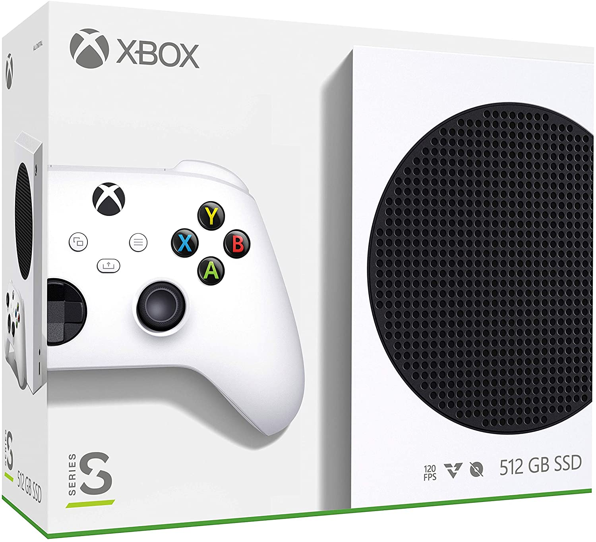
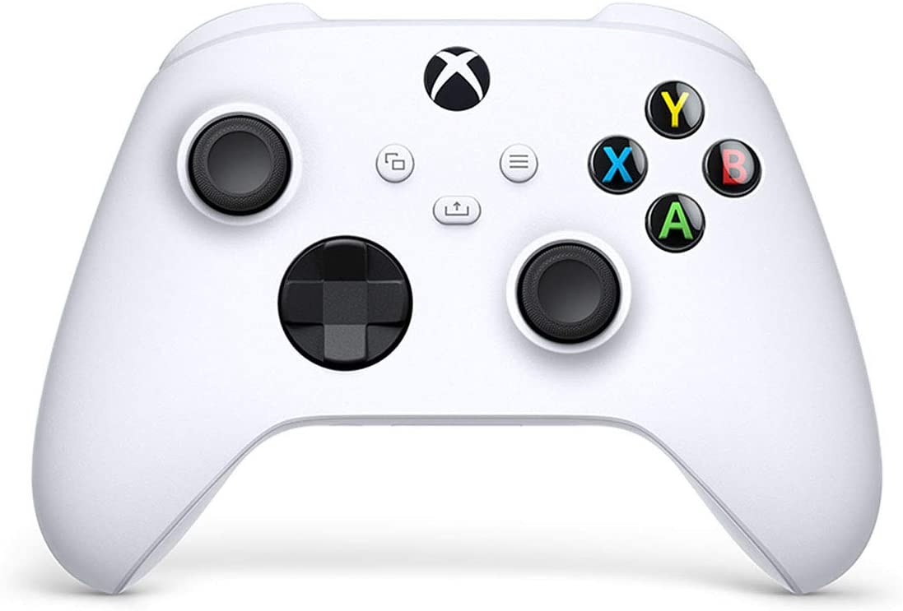

  
Console Microsoft Xbox Series S, 512GB, Branco - RRS-00006
R$ 2.469,91
Comprar
10% OFF no pagamento via PIX ou 1x no cartão
R$ 2.599,91 em até 12x de R$ 216,66 sem juros no cartão de crédito.
Descrição do produto:
Xbox Series S, o menor e mais elegante de todos os tempos. Com taxas de quadros mais altas, tempos de carregamento mais rápidos e mundos mais ricos e dinâmicos, o Xbox Series S oferece desempenho e velocidade de última geração em um formato compacto e totalmente digital. Retrocompatibilidade com milhares de jogos. Prepare-se para tempos de carregamento mais rápidos, resolução mais alta, taxas de quadros mais estáveis e melhor latência de entrada em milhares de jogos Xbox One, Xbox 360 e Xbox Original.
Características:
- Marca: Microsoft
- Modelo: RRS-00006
CONSOLE MICROSOFT XBOX SERIES S
Especificações:
Cor:
- Branco
Processador:
- CPU: CPU Zen 2 personalizada de 8X Cores @ 3,6 GHz (3,4 GHz com SMT)
- GPU: 4 TFLOPS, 20 CUs @1.565 GHz
- SOC Die Size: 197,05 mm²
Memória e Armazenamento:
- Memória: GDDR6 de 10 GB e barramento de 128 bits
- Largura de banda de memória: 8GB a 224 GB/s, 2GB a 56 GB/s
- Armazenamento interno: SSD NVME personalizado de 512 GB
- Taxa de transferência de E/S: 2,4 GB/s (Raw), 4,8 GB/s (compactado, com bloco de descompressão de hardware personalizado)
Armazenamento expansível:
O suporte para o cartão de expansão Seagate de 1 TB para Xbox Series X|S corresponde exatamente ao armazenamento interno (vendido separadamente) Suporte para HDD externo USB 3.1 (vendido separadamente)
Recursos de Vídeo:
- Resolução de jogos: 1440p
- Meta de desempenho: Até 120 FPS
- Recursos HDMI: Modo automático de baixa latência / Taxa de atualização variável HDMI / AMD FreeSync
Capacidades de som:
- L-PCM, até 7.1
- Dolby Digital 5.1
- DTS 5.1
- Dolby TrueHD com Atmos
Portas e Conectividade:
- HDMI: 1 porta HDMI 2.1
- USB: 3 portas USB 3.1 Gen 1
- Sem fio: Banda dupla 802.11ac
- Ethernet: 802.3 10/100/1000
Dimensões:
- 6,5 x 15,1 x 27,5 cm
CONTROLE SEM FIO XBOX
Design:
- Design moderno
- Superfícies esculpidas e uma geometria definida
- Gatilho texturizado
- Botões direcionais híbridos
Conteúdo da Embalagem:
- Console Xbox Series S
- Controle sem fio Xbox
- Cabo HDMI de alta velocidade
- Cabo de alimentação
Garantia do controle é de 3 meses e do console é de 1 ano.*
Garantia:
1 ano de garantia (9 meses de garantia contratual junto ao fabricante + 3 meses referentes à garantia legal, nos termos do artigo 26, II, do Código de Defesa do Consumidor)
Peso:
3225 gramas (bruto com embalagem)